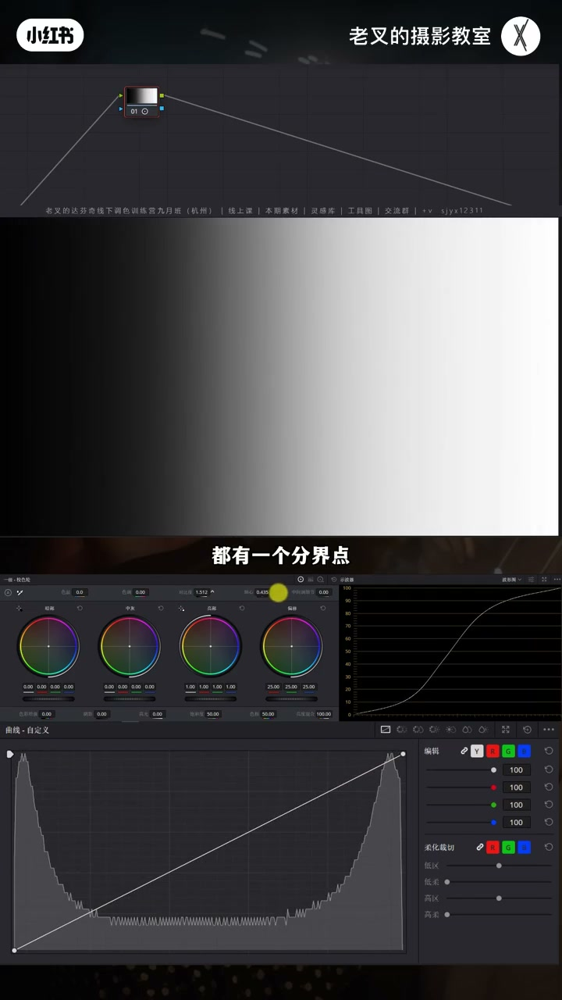
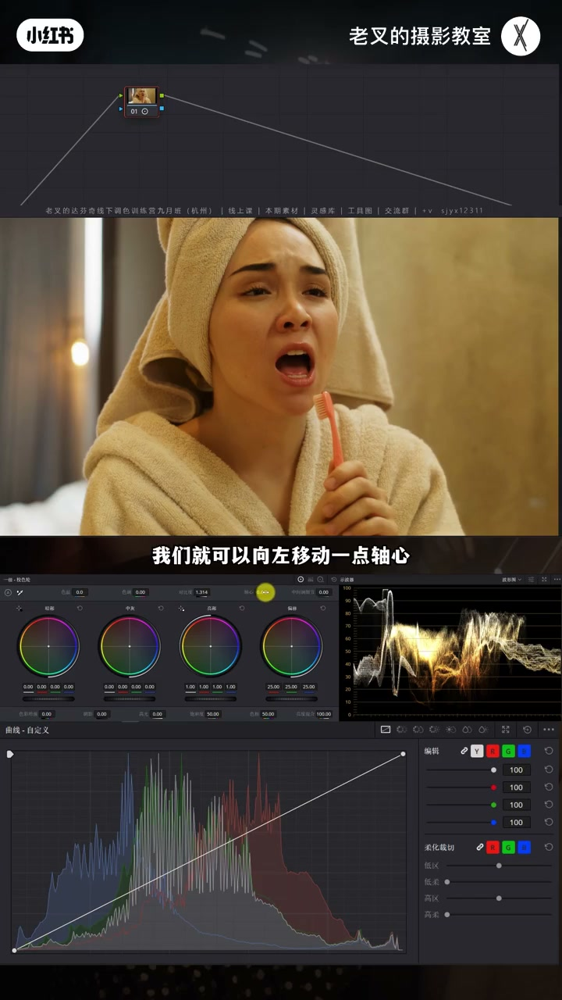
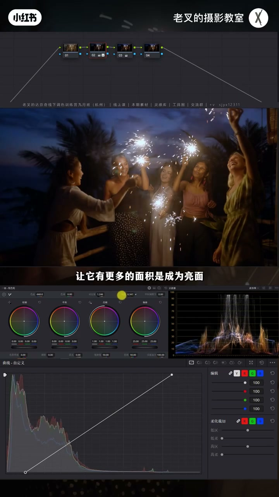
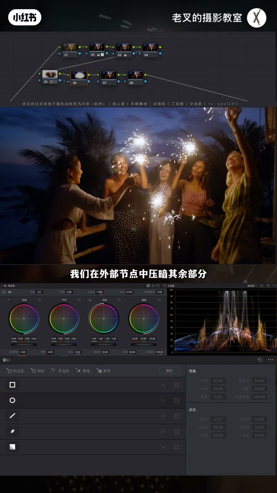
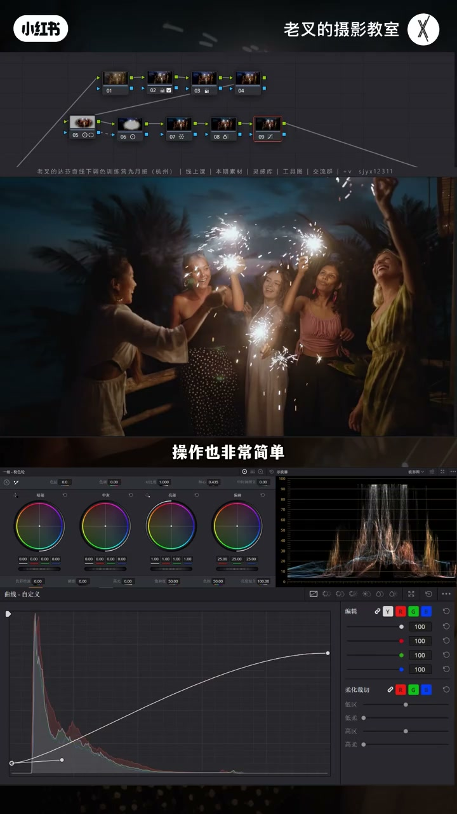

内容要点
轴心决定对比度把谁当亮面、谁当暗面：亮于轴心更亮、暗于轴心更暗。轴心左移→更多面积当亮面（加对比同时提亮）；右移→更多当暗面（加对比同时压暗）。不要迷信广色域默认 0.436；按目的与素材曝光选轴心，再配合遮罩内外节点强化主次。
知识结构
对比度分界点；左移提亮面、右移压暗面。
0.436 保中灰是理，过亮素材应右移护高光。
人物亮背景暗：加对比+轴心左；遮罩内外再强化。
天空密度/饱和；柔和对比度可选。
轴心不是固定参数表，而是对比度的亮暗分界旋钮：左移保脸提亮、右移护高光压背景。先定目的再移轴心，再谈默认数值。
00:00-01:33对比度的分界点就是轴心
提高对比度＝亮更亮暗更暗，波形两端张开，近似曲线画 S。分界点即当前轴心：亮于轴心为亮面，暗于为暗面。加对比前提下轴心左移（减小数值）→更多面积当亮面，画面加对比同时提亮；右移→更多当暗面，加对比同时压暗。

01:33-03:23脸部应用；默认 0.436 不是圣经
人像加对比后面部大面积变暗：轴心略左，让更多脸被当亮面。广色域默认约 0.436 时常说可保中灰加对比——前提是你认定的中灰曝光正确。素材已偏亮时默认轴心轻轻加对比就过曝；改成更小轴心更易爆。此时要加对比应右移轴心（甚至 0.7–0.8）护高光。轴心跟目的走，不跟死记数字。

03:23-05:58实战：人物亮、背景暗的轴心组合
烟花人像：还原拉高光/暗部并加饱和，校正白平衡略偏蓝。发灰则加对比——目标人物更亮、背景更暗。默认加对比后背景暗了但人物（除烟花）也暗：轴心左移让受光面当亮面。人物仍融入背景可再遮罩加对比+轴心提受光；Option+O 外部节点压四周，对比度+轴心右移压暗。开关可见人物立体亮、背景立体暗。


05:58-07:23颜色微调与柔和对比度
天空可略往青、皮肤微橙并降一点饱和；天空过艳则提青蓝密度并降饱和防抢戏。柔和对比度可做可不做，减弱数码硬感。达芬奇没有固定不变的「数」，参数跟目的与素材走。

完整转录（36段）
以下文本由 Whisper medium 模型自动转录，可能存在少量识别误差，已尽可能修正。
阿芬奇的轴心是干嘛的?我们今天不讲太抽象的原理,我们直接讲应用。当我们对一个画面进行对比度的提高时,我们看到画面就会出现亮的更亮暗的更暗,而波形图也同样呈现出右半端往上,左半端往下的一个趋势,它就是一个S曲线对吧?就像是我们在用曲线工具给它画了一个S曲线是一样的。
如果说我们用曲线做了一个S曲线,那么它的效果跟增加对比度本质上是一模一样的。
而我们增加对比度之后,此时我们看到,不论是画面还是波形图都有一个分界点,随着对比度的提高,这个分界点越来越明确对吧?
而这个分界点就是当前轴心所在的位置,也就是说,轴心的位置决定了达芬奇将哪一部分视作亮面,哪一部分视作暗面。
亮于轴心的部分就是亮面,也就是个黑白界面图的右半部分,而暗于轴心的部分就是暗面。
我们能够通过改变轴心的竖直,来改变亮面与暗面的关系。
当我们在增加对比度的前提下,向左也就是减少轴心的竖直的时候,画面中有更多面积被视作亮面,那对于整体画面来讲,更多的面积被体量了,也就是画面在增加对比的同时体量了。
而如果说我们向右也就是增加轴心竖直的时候,画面中会有更多的面积被视作暗面,那对于整体画面来讲,有更多面积的内容被压暗,那么画面就是在增加对比的同时压暗了。
此词,轴心,你就理解了,就这么简单,那要怎么去应用呢?我们可以看到这个画面,假如说我们要增加它的对比度,我觉得它向右可能有点太灰了,对吧,增加点对比度。
增加对比度了之后,它的脸部有太多面积变暗了,所以我们就可以向左移动一点轴心,让脸部有更多面积被视作亮面,这样就能够既保证增加对比度,也能够保证脸部不会太暗。
不知道有多少人看过这张表,在不同的色彩空间下,轴心的默认数值是不同的,比如说在达芬基广色域是0.436,也就是说在0.436的轴心数值下增加对比度,能够保证中晖部分的曝光不变的前提下增加对比度。
这同样也是很多些博主他们会说,要在还原阶段用0.436的轴心去增加对比度,理是这个理,但这会有一个问题,怎么保证你认定的中晖区域曝光是正确的。
如果说你前期拍的稍微有点过暴呢,比如说是这个画面,它是S6三排的,所以我们可以用输入在空间还原来给它简单做一下调整,你会看到这个画面目前在波形图上来看它还好,只是稍微有点亮了对不对,如果说我们想让它再增加一点对比度,轻轻一动,你会发现左上角这个蓝的,我们把它连转过来啊,轻轻一动,我才改了一点点的数值,它就过暴了,而我们此时轴心的数值是默认的0.435,如果说我们把它改成0.336,我们可以把它改成0.336,我们可以把它改成0.336,我们可以把它改成0.336,我们可以把它改成
0.336会怎么样,画面会有更多的部分被视作亮面对不对,那我们增加对比度的时候,这张脸更容易过暴了,那你就说这是肯定不合适的对吧,那你说对这个画面我就不加对比度了呗,不是这样说的啊,就当你这个画面的曝光不能够依照正确的或者是标准的一个曝光来进行的话,你的对比度调整,它就不能依靠一个默认的轴心数值,那对于这个画面,如果说我就要让它增加对比度,那我轴心应该是往右移,而不是向左变成0.436,甚至要跑到0.70.8的样子,
它才能够在增加对比度的同时保证这些高光不会过暴对不对,也就是说轴心从来不能依靠某一个具体数字,而是根据你的最终目的来操作的,我们再来一个更直接的应用场景啊,比如说这个画面我们给它先简单做一下还原,高光这一端给它往上拉一点,暗部这一端往下降一点,到这差不多,等等再给它加一点点饱和度,画面白平衡不正确对吧,我们可以先给它校正一下,
再回到2号节点,用色温工具给它往蓝的方向走一点点,我就到这里就差不多,那整体呢,目前来看,严重发挥,对吧,那既然发挥呢,我们自然要提高对比度,这个画面它其实已经做好了分区的,也就是人物是亮面,背景是暗面,如果说我们在增加对比度的时候,能让人物更亮,背景更暗,那画面的立体感立马就出来了,层次也能增加,我们可以先增加一下对比度试试看啊,给它加到这个程度,稍微多加一点,我们看到背景是变暗了对吧,但是人物除了手中的烟花,
以外七部分也变暗了,这肯定不是我们想的结果,那此时呢,我们只需要向左移动轴心,让它有更多的面积是成为亮面,那这样的一个结果就能够让人物的受光面被试做亮面,从而在增加对比度的同时让人物这个区域变亮,对吧,而背景呢依旧能够变暗,这才是轴心在一起交涉与还原阶段真正的涌出,而不是利用一个默认数值进行操作,那对于这个画面,我们还有什么行为可以去做呢,我认为啊,人物我觉得还是有一点
发挥,所以呢,我们可以给他这个区域再画一个遮罩,
不好遮罩之后,我们再给他稍微加一点对比度,
配合轴心,
来让想亮起来的部分,让他变亮啊,也就是人物的受光面,他一定是要远亮于背景的,不然的话,你人物太多,融入背景也是不好看的啊,
我就这样差不多,然后呢,再按住 alt 或者是 option 加 o 来建立一个外部节点,
外部节点就是与前面这个节点的遮罩完全相反的一个节点啊,我们在外部节点中,压按其余部分,也就是压按四周,我们同样可以利用轴心和对比度的组合来进行操作,
增加点对比度,然后将轴心往右移动,让画面中有更多的面积被视作暗面,让他能够在增加对比度的同时让他压按,
好,我们此时来看这两个节点的变化,调整前,调整后,是不是人物变立体了,同时他变亮了,背景也变立体了,同时他变暗了,对吧,那这样的一个分层,或者说强化主次的一个效果就非常非常好,
然后颜色方面,我觉得可以考虑把天空弄的稍微轻一点点啊,也就是把蓝色往青色方向走一点,
皮肤呢也可以稍微红一点点,让他往橙色方向走一点点啊,不要太多,一点点就行了,然后把饱和度稍微降一点下来,
我觉得这样的一个结果就不错啊,不用怎么调,这本身场景就已经比较不错了,这个效果大方向其实不错,但是我觉得天空的颜色有点太艳丽了,所以我在后面跟了一个节点,
稍微增加了一点青色和蓝色的密度,同时降低了一点他们的饱和度啊,这个天不要太抢心了,
好,我觉得这样效果其实不错的,最后呢再来一个柔和对比度,简单的一操作就好了,柔和对比度同样的啊,我们讲过无数次了,
根据你的观感,可做可不做,这一步其实不是必备的,但是如果说你不想让你的画面有太强的一个数码感,
能够让画面这个氛围感更强一点点的话,可以考虑来个柔和对比度,操作也非常简单,
那么这个画面其实这样就调好了,不需要那么复杂的一个操作,我们可以以还原后的画面来做一下对比,这是还原后的画面,这调好后的画面,对吧,整体的一个感觉就能出来了,
这些素材大家可以看视频中的小字,领取过去之后自己操作下,如果按照我的思路能够调出一个满意的效果,
那么你就能够熟练掌握对比度和轴心的使用了,要记住的一个点啊,就是达芬奇没有什么数,只是固定不变的,
一定是根据目的和素材本身情况来找整的一个参数的,讲到这里,如果觉得你有帮助的话,还希望多多赞联,好了,这期就到这里,886。